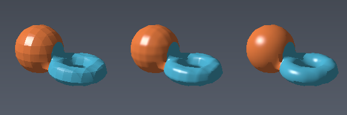
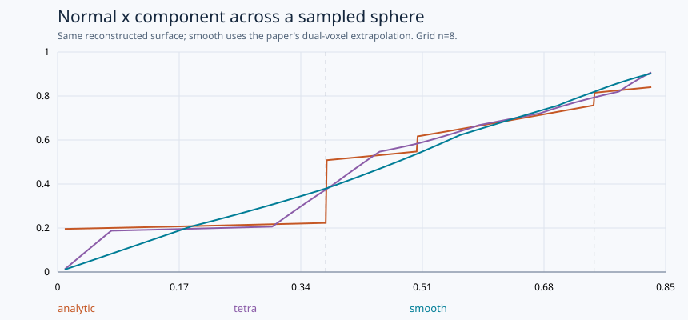

SDF-grid ray tracing · floating-point results
实验导航、源码与下载Timings vary with machine load; these results compare correctness and do not predict GPU performance.
- Grid: 16³ voxels; nonempty voxels: 352; bricks: 12.
- Python: 3.9.6; quantized: False; random rays: 1000.
| Traversal | Voxel intersection | Seconds | Hit mismatches | Maximum t difference | Exhaustion count |
|---|---|---|---|---|---|
| GST | GST | 0.2940 | 0 | 2.13e-05 | 0 |
| GST | ST | 0.1313 | 0 | 2.78e-08 | 0 |
| GST | A | 0.1317 | 0 | 3.55e-15 | 0 |
| GST | M | 0.1332 | 0 | 6.76e-13 | 0 |
| GST | NR | 0.1327 | 0 | 5.17e-13 | 0 |
| SVS | ST | 0.0793 | 0 | 2.78e-08 | 0 |
| SVS | A | 0.0800 | 0 | 0 | 0 |
| SVS | M | 0.0815 | 0 | 6.76e-13 | 0 |
| SVS | NR | 0.0802 | 0 | 5.17e-13 | 0 |
| SBS | ST | 0.1003 | 0 | 2.78e-08 | 0 |
| SBS | A | 0.1029 | 0 | 0 | 0 |
| SBS | M | 0.1045 | 0 | 6.76e-13 | 0 |
| SBS | NR | 0.1039 | 0 | 5.17e-13 | 0 |
| SVO | ST | 0.0744 | 0 | 2.78e-08 | 0 |
| SVO | A | 0.0746 | 0 | 0 | 0 |
| SVO | M | 0.0765 | 0 | 6.76e-13 | 0 |
| SVO | NR | 0.0755 | 0 | 5.17e-13 | 0 |
The reference is DDA+A on the same trilinear field. Finite ST/GST budgets and thresholds introduce approximation errors; exhausted counts individual local-solver or traversal budget limits.
| Shadow optimization | Occluded rays | Root iterations | Early exits | Seconds |
|---|---|---|---|---|
| False | 171 | 589 | 0 | 0.0284 |
| True | 171 | 0 | 171 | 0.0261 |
Shadow Boolean mismatches: 0.


